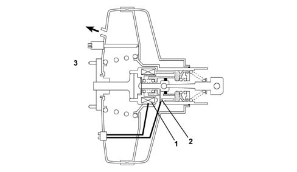
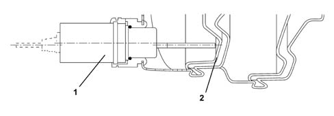
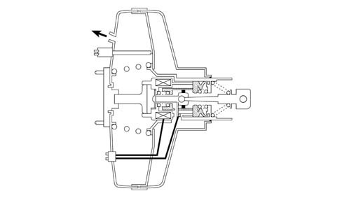
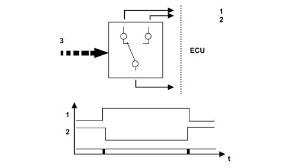

BRAKE ASSISTANT SYSTEM
- Path
- Descriptions > 55 ELECTRICAL EQUIPMENT > 5580 SPECIAL ACCESSORIES > BRAKE ASSISTANT SYSTEM
- Kind
- system description
- Applies to
- all engines; all production periods
- Interactive page
- https://sloeber94.github.io/elrnDB-lThss/en/#/226630
Applies to: all engines; all production periods
INTRODUCTION
The Brake Assistant system is a device designed to brake the vehicle indepdendently of the action of the driver on the brake pedal.
The control unit is equipped with an interface for connection to the C-CAN therefore it has the name BRAKE ASSISTANT NODE (N.B.A.)
The Brake Assistant Node intervenes, acting on the vacuum brake servo and the movement of the push rod acting on the brake pump master cylinder is such as to move the brake pedal and switch on the brake lights.
The intervention of the Brake Assistant takes place when requested by the Adaptive Cruise Control.
During operation the "NBA" system mainly converses with the Adapative Cruise Control system and also with the following systems: Brake Node, Engine Management Node, Body Computer Node and Automatic Transmission Node.
COMPOSITION
The Brake Assistant Node system consists of the following components:
- control unit, fitted on the power unit and interfaced with the C-CAN
- specific brake servo unit with the following components incorporated: actuator solenoid (for controlling braking), release switch (for detecting the action of the driver on the brake pedal), position sensor (for detecting the movement of the brake servo diaphragm and, consequently, the brake servo push rod).
OPERATION
The Brake Assistant Node on the Lancia Thesis is activated by the Adaptive Cruise Control to brake the vehicle independently, without the driver acting on the brake pedal, in order to maintain the correct distance from the vehicle in front. This is made possible because the Brake Assistant Node controls the brake servo by means of an internal electro-magnet.
The braking process is controlled through a potentiometric position sensor fitted on the brake servo, brake pump side. This sensor comes into contact with the brake servo diaphragm and when the latter moves the sensor detects this movement. This change in position is interpreted by the control unit as a movement of the brake pump main shaft.
The brake servo contains a switch known as the release switch which recognizes when the driver operates the brake pedal and activates the safety logic.
There are three possible operating states for the Active Booster system:
- rest state,
- activation state,
- maintenance state.
Let us now examine a simplified model of the brake servo with a diaphragm type Brake Assistant bearing in mind that the Lancia Thesis is fitted with a brake servo with a twin diaphragm.

- 1 - electro-magnet
- 2 - release switch
- 3 - brake pump side
In this situation the two chambers separated by the brake servo diaphragm, the pump side chamber and the brake pedal side chamber, are in contact with one another and the vacuum from the intake manifolds (petrol engines) or the vacuum pump (diesel engines) is felt on both sides maintaining a balance for the diaphragm
During activation, the electro-magnet is controlled by the Brake Assistant Node control unit in PWM, the two chambers are isolated from one another, but, as can be seen in the diagram, the brake pedal side chamber "A" is in contact with atmospheric pressure, therefore as a result of the difference in pressure, the diaphragm moves towards the pump side chamber "B", pushing the main shaft and producing an increase in pressure in the hydraulic brake circuit.
The movement of the diaphgram and, consequently, the pump main shaft, is cnotrolled by the control unit via the position sensor.

- 1 - position sensor.
- 2 - brake servo diaphragm.

The two chambers are, once again, isolated, but the brake pedal side chamber "A" is isolated from the atmospheric pressure which maintains the braking action regulated by the Active Booster Node control unit.
To return to a state of equilibrium with the brakes released, the system de-energizes the electro-magnet and the two chambers are once again in contact with each other.
SAFETY LOGIC
If the brake pedal is operated, the Brake Assistant Node control unit de-energizes the electro-magnet; the Brake Assistant Node uses a switch inside the brake servo system to recognize that the brake pedal is depressed

The diagram illustrates how the switch is directly connected to the control unit via three stems: one supply and two signal which allow the recognition of the following positions:
- pedal released (position 1),
- pedal pressed (intermediate position without a signal to the control unit),
- pedal fully depressed (position 2).
C-CAN MESSAGES
The Brake Assistant Node system interfaces with other C-CAN nodes during operation
Incoming messages
Adaptive Cruise Control Node (NAC)
The NCA system provides the following information:
- activation command to the Brake Assistant
- pre-control of the Brake Assistant system
- NCA state
- engine parameters from NCA to NCM
it also checks the data transmitted to the Brake Assistant Node
Engine Management Node (NCM)
The NCM system provides the following information:
- engine parameters (torque, rpm, etc.)
- brake pedal switch state
- accelerator pedal state
- NCA activation
- operating commands from NCM to NCA
Brake Node (NFR)
The Brake Node system provides the following information:
- activation of the ABS, ASR, MSR, ESP logics
- wheel speed values
- braking system pressure value
- setting off in second gear
Automatic gearbox node (NCA)
The Automatic Gearbox Node system provides the following information:
- activation of the automatic transmission switch
- gear engaged
Body Computer Node (NBC)
The Body Computer Node provides the following information:
- brake pad wear
- brake fluid level
Outgoing messages
The Brake Assistant Node provides the following information to the following Nodes:
to the Adaptive Cruise Control Node (NAC):
- diagnostic state
- Brake Assistant system intervention state
- safety sensor state
- acceleration and speed reference values from the NAC
to the Brake Node (NFR):
- Error state
- Brake Assistant system intervention state
- Safety sensor state
- Maximum intervention command
to the Body Computer Node (NBC):
- EOL end of line programming state
to the Engine Management Node (NCM):
- safety switch state
Diagnostic functions
The Brake Assistant Node can be diagnosed using the Examiner equipment
Like all the nodes connected to the C-CAN the control unit has a two-way K line dedicated to fault diagnosis.
In the diagnostic state, the Brake Assistant system is not available, for safety reasons, to the Cruise Control Node; this situation is indicated by the Cruise Control failure signal in the Instrument Panel Node; it should be remembered that the Brake Assistant has no warning lights so that if there is a malfunction the Adaptive Cruise Control system fault message is used.